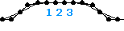
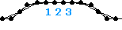

| 001 |
 |
name: CrazyLobber
genre: zero-g/representational
comments: This is my very first model, and it looks the part. I obviously had no idea how to control muscle amplitude or timing, just look how messy the wave pallet is. And I don't even like lobster. Well, at least it shows that anyone can learn to construct. |
| 002 |
 |
name: InnocentRock
genre: other/representational
comments: Continuing the 'crustacean' theme, my second model features a decently structured eel attacking a shrimp. It also starts from an artificially created initial state. That's why it appears to jump out when it starts. |
| 003 |
 |
name: Evil_With_a_Capital_E
genre: other/representational
comments: After reading the official tips from sodaplay, I managed to make these shapes oscillate back and forth. A simple 'hear no evil...' theme rounded out the image, although I don't think I was trying to say anything in particular. At this point I was just hoping to make something interesting enough to get in the zoo. |
| 004 |
 |
name: Hermeneutic_Circle
genre: other/representational
comments: I wish I had been more skilled when I tried to visually represent section 32 "Understanding & Interpretation" from Martin Heidegger's "Being & Time." If you are familiar with that book, the theme is pretty straightforward. Ironically, my desire to revisit and remake this model speaks volumes about its subject matter. |
| 005 |
 |
name: UnblinkingHypnotronicEye
genre: zero-g/physics
comments: I scavenged the ring structures used here from an earlier zoo model and converted them to a zero-k piece. Since then I have learned more about the soda community conventions and wish could remember the original maker to credit them. |
| 006 |
 |
name: FullyIndependantSuspension
genre: roller
comments: This is my first real model. I had obviously learned how to make rotors and employed them in a frame that resembles a mountain or dirt bike. I didn't really understand the physical settings yet, but the durability of the structure makes up for it. |
| 007 |
 |
name: Linear_Motor_but_Rotary_Motion
genre: roller
comments: This was my first entry into qwerty's legendary motor contest. It is my first motored model and I later found out that lonelyswedish's first used a similar mechanism to power its wheels with a linear motor. |
| 008 |
 |
name: WedgeWalker
genre: walker/motored
comments: This is my first motored walker and also appeared in qwerty's motor contest thread. It is surprisingly delicate, so I consider myself lucky to have tuned it successfully. Notice that the wheels are not perfectly round because I had not learned about flex structures yet. |
| 009 |
 |
name: Crescent_Elipsicron
genre: zero-g
comments: This is an attempt to revisit the structure used in Hermeneutic_Circle. I think a Kevino model named pFloxZs inspired the cross-members. |
| 010 |
 |
name: TwelveStrand
genre: walker
comments: Strangely, my first regular walker came after my first motored walker. I also remember paying close attention to tension springs for the first time when I made this model. Originally it had six separate legs but I joined the toes with springs across the bottom. The name refers to the number of muscles. |
| 011 |
 |
name: Harmonic_Fluteworm
genre: snake
comments: This is my first snake model. The name is partially derived from the fact that one wave coursing through this model has twice the frequency of the other. The amount of muscles and the timing complexity made this my first programming challenge. |
| 012 |
 |
name: Armadillicus
genre: snake
comments: This model was my first to get any attention from the rest of the community. It uses some 2pt compound linear motors to give it the appearance of an exoskeleton. And I am still surprised by how dramatic the motion turned out to be. The name is meant to sound like a gladiator's. |
| 013 |
 |
name: Z_Axis
genre: walker/motored
comments: This walker shuns direct muscling in favor of a strictly mechanical way of driving its legs. I am not sure if this method was used before in the zoo, but I have used what has come to be called offset timing many times since. |
| 014 |
 |
name: Approaching_Theta
genre: zero-g/flex
comments: This flexible structure reminds me of a scene from the movie Pi involving spirals. The name derives from the discussion of the Fibonacci sequence and golden ratio in that scene. I scavenged this structure many times for other models to avoid building another flex loop. |
| 015 |
 |
name: Veil_of_Being
genre: zero-g/flex
comments: This has an eerie shape that looks like it's flapping in the air. Maybe this would make a good screensaver? The pretentious name is not meant to imply anything specific. |
| 016 |
 |
name: Cobra_Pharoah
genre: zero-g/flex
comments: Sometimes it looks like a striking cobra, other times it looks like a pharaoh's headdress. Either way it is just a reprogrammed version of Veil_of_Being. |
| 017 |
 |
name: BlueCube_KevinoStyle
genre: amoeba/flex
comments: Resulting from my fascination with Kevino's Triangle_Q, this model was built by adding to his original. I choose a color for the name because I knew I was going to make a series. Since then I learned that adjusting the supports' relative amplitude can sharpen the square's shape. |
| 018 |
 |
name: Form_vs_Function
genre: zero-g/flex
comments: I think I scavenged this shape from my earlier model UnblinkingHypnotronicEye. I gave it a simple program and basically momentum does the rest. The left over masses are there to highlight the circle's original dimensions. |
| 019 |
 |
name: Calle_Lily
genre: zero-g/flex
comments: There is nothing really grim about this model, but it briefly takes on the appearance of a flower often seen at funeral services. It was made by adding to Cobra_Pharaoh. |
| 020 |
 |
name: Golden_Mobius
genre: other/flex
comments: I made this model in response to a suggestion on the boards that someone make a Mobius strip. I built it from Approaching_Theta and called it Golden_Mobius in reference to the golden ratio's inspiration of the former. |
|
021-040
|
|
041-060
|
|
061-080
|
|
081-100
|
|
101-120
|
|
121-140
|
|
141-160
|
|
161-180
|
|
181-200
|
|
201-220
|
|
221-240
|
|
241-260
|
|
261-280
|
|
281-300
|
|
301-320
|
|
321-340
|


 
